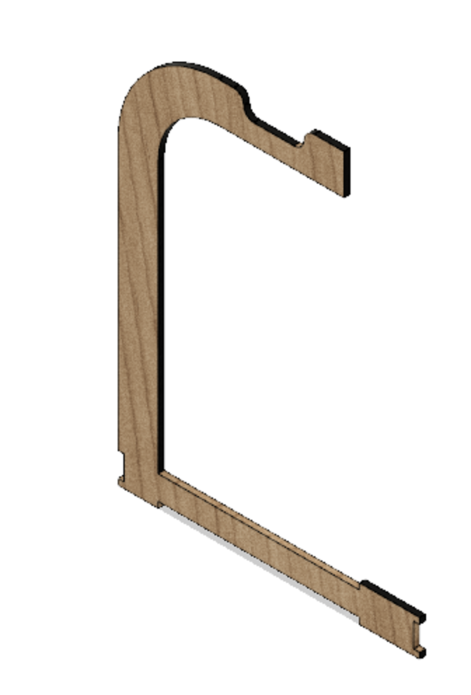

CNC Lazercutting
Here I will tell you about the process of how I created a headphone stand for my work station.
The process 1.0
I wish I could tell you that this was like dancing on roses, easy and smelled well, but that is by no means the truth.
The first part of the process was brainstorming. Because it is a good to have an idea to work from. I started my journey by looking for inspiration
- Random AI generated pictures
- CNC machine projects
- Mechanical counter
- Disc golf rack
And then I decided that it would be my first project, although the design will have to be changed slightly. I found this image and decided that it would be a good base idea for what I wanted to do.

The process 2.0
I decided to use fusion 360 for this project because I had no experience with it. Also it is easily available for macbooks which is my main working computer. After watching a few fusion tutorials I was ready to start modeling. The main objective was to use parameters for as many of the dimentions as possible so it would be easy to change the properties of the model afterwards.
And to use fingerjoints and slots to keep everything together so there was no need for any screws or fasteners. The process went a little like this: The main height unit was roughly created, but there will be more of them side by side, some of its parameters might also be changed further down the line.
then the baseplates were created.
And the to leg has finally all its parts.
If you want to learn about colouring your fusion objects beautifully like this you can check out this tutorial.
Next all of the components were layed out flat to create a cutting template for the CNC machine.
Cutting process
To create the cutting paths for my pieces I used this youtube tutorial. I calculated the kerf as 0.125 mm but when I did my first test, which can be seen below, I was not happy with the tightness between the parts. After talking to some of the other students, the conclusion was to change the kerf to 0.22 mm, that change made a massive difference and definetly improved the fit. After using the tool there is a two dimentional diagram that can be exported to any painting application that has a feature that changes the normal pixelated images to a bitmap. Bitmaps are high resolutions of the original pixelated images. In this case the free application known as inkscape was used.
When the file had become a bitmap in inkscape in the computer connected to the CNC machine the ctrl - p could be pressed. Then the CNC printer opened up and the subsequent settings were set, these settings are different for every material

The first print was a simple test of some of the parts, mainly the arm and base of the headphonestand. As can be seen in the image below the arn turns out to be to short for the headphones, this is a quick fix and the arm was heightened by a few centimeters.
Lastly I wanted to be able to charge my headphones while they are on the stand. So I added some holes that i could sneak a charging wire through.
And finally it is ready!